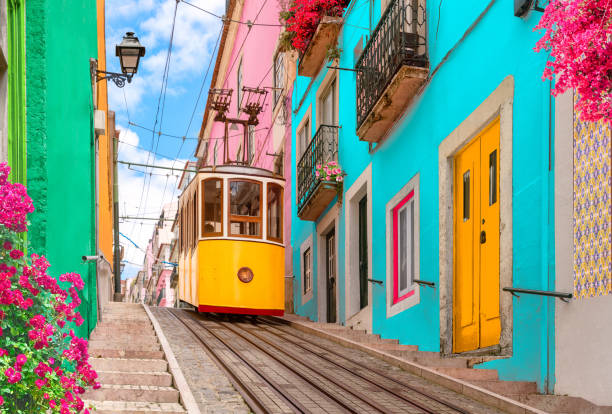

Fotografias



Nesta pagina encontra conteudos multimedia relacionados com a cidade
Lisboa, colina de luz e de fado,
teu Tejo espelha o ouro do passado,
nas vielas, o eco do pregão,
no azulejo, um pedaço de canção.
Cidade de sombra e claridade,
que guarda em si a doce saudade,
barcos partem do teu coração,
levando sonhos na imensidão.
Entre Alfama e o Chiado desperto,
cada rua é um livro aberto,
onde a brisa mistura ao acaso
cheiro de maresia e de abraço.
Oh Lisboa, rainha singela,
és melodia eterna e bela,
no teu horizonte a alma se deita,
e em cada pôr do sol, és perfeita.